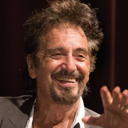
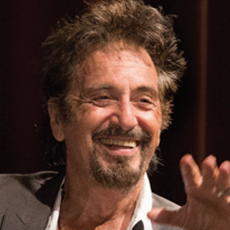

关于纽约电影学院
NEW YORK FILM ACADEMY
纽约电影学院旨在培养新一代电影人，欢迎满怀激情和梦想的视觉艺术家和表演艺术家们，通过亲身体验的方式，
在高强度、多实践、高合作的环境下创作独特的作品。
纽约电影学院在世界各地建立起自己的校区，包括美国纽约、洛杉矶、澳大利亚悉尼和黄金海岸，以及全年在意大利佛罗伦萨的项目。
以高强度和强实践享誉世界。纽约电影学院的课程将理论应用于大量的实践，
训练学生用视觉化的方式吧故事讲述的精彩绝伦又扣人心弦，不断激发学生的创意，直至掌握全套讲故事的技法。
艺术学士学位课程 Bechelor of fine arts
洛杉矶校区课程：电影创作 · 影视表演 · 图片摄影 · 影视制片 · 剧本创作 · 游戏设计 · 3D动画和视觉特效 · 平面设计
迈阿密南滩校区课程：电影创作 · 影视表演 · 图片摄影
纽约电影学院3年制本科学士学位课程将高强度专业训练和通识教育相结合，专门为那些对艺术创作有追求的学生 设计。紧密的将理论课程和实践创作融汇整合，通过使用最先进的业界设备，让学生最大限度的在纽约电影学院发 挥自己的艺术创意。在洛杉矶和南海滩校区，我们的艺术学士学位课程给学生们提供了一流的教学和实践环境。在 纽约和澳大利亚校区完成一年课程的学生，若要继续攻读本科学士学位，可以获得部分课程免修资格。
文学学士学位课程 Bechelor of arts
洛杉矶校区课程：媒体研究
纽约电影学院3年制强化文学学士课程是一个为期8学期的课程，专注于当代新兴媒体艺术研究， 注重理论研究对当今社会的影响。我们的目标不仅要培养适应高速变化的娱乐产业人才，而且要 培养具有思想的媒体消费者、评论家和制片人。
艺术副学士学位课程 Associate of fine arts
洛杉矶校区课程：电影创作 · 影视表演 · 剧本创作 · 游戏设计 · 影视制片
该课程为那些更注重影片制作、影棚拍摄的学生设计，纽约电影学院的艺术副学士学位让学生用两 年的时间拿到学位。纽约电影学院的艺术副学士学位，是一个独特的学位课程，让学生们自由选择 职业道路，艺术副学士学位课程不能延长至本科学位，也不能转学分。
艺术硕士学位课程 Master of fine arts
洛杉矶校区课程：电影创作 · 影视表演 · 剧本创作 · 图片摄影 · 影视制片 · 纪录片创作 · 电影摄影 · 游戏设计
迈阿密南海滩校区课程：电影创作 · 影视表演 · 图片摄影
纽约电影学院的艺术硕士学位课程在洛杉矶和迈阿密南滩校区设置，是同类艺术院校中最独特、 最优秀的。其强化的艺术学院课程，高水平的电影制作及相关影视教学，要求所有学生全身心投 入学习，做到精力高中集中。作为艺术硕士课程的学生，将结合实践课程，制片工作坊和独立 项目达到多样化学习和制作的目标。该项目的毕业生已经将所学技法运用到各自的领域，并取得 了前所未有的成功。
如希望将一年制非学位课程的学分转到纽约电影学院洛杉矶和迈阿密校区的艺术硕士学位课程， 请咨询相关工作人员。
文学硕士学位课程 Master of arts
洛杉矶校区课程：影视媒体创作 · 影视制片 · 剧本创作
纽约电影学院的文学硕士学位课程是为期一年的课程，给学生们在一年的时间完成硕士学位的 机会。文学硕士学位的每一个专业都会以实践型的项目课程为基础，让学生们全身心投入到创 作中去。作为文学硕士学生，你将会获得非同寻常的课业和时间相结合的学习体验。
授课地点
LOCATIONS纽约市，纽约州
纽约市人口结构，种族构成，文化和景观极其多样化， 在学生的项目拍摄和生活中起到举足轻重的作用。
洛杉矶，加州
洛杉矶校区位于好莱坞的中心，学生近距离接触娱乐行 业。在环球影视城拍摄基地和华纳兄弟影城拍摄。
南海滩，迈阿密
南海滩校区提供视觉表演艺术方面的深入教育。迈阿密 是美国南部的文化枢纽。
悉尼，澳大利亚
悉尼校区洋溢着浓郁的文化、历史和唯美的气息。是视 觉和表演艺术实践教育的绝佳之地。
黄金海岸，澳大利亚
黄金海岸热情洋溢，是一个能启发学生灵感的地方，周 围多姿多彩的文化正等待他们去探索。
佛罗伦萨，意大利
纽约电影学院与托斯卡纳电影委员会合作，在古老的文 艺复兴时代宫殿上课，距米兰大教堂仅几步之遥。
校园生活
STUDENT LIFE充满活力的学生团体
加入纽约电影学院意味着你将加入一个充满活力、非常多元化的学生团体。我们提倡和鼓励多元文化环境，因为文化和思潮的交流总能激发创意的火花。
STEAM
纽约电影学院的STEAM教育计划倡议让学生有机会与合作机构一起工作，参与到真实的科学研究，问题解决和公共推广中，感受各领域先进的STEAM成果。
NYFA产业实验室
纽约电影学院的产业实验室为学生提供真实的产业经验，让他们有机会与专业级客户一起合作大制作。实验室的合作对象包括华纳兄弟、WaterWalks制片公司等等。
客座教授
GUEST SPEAKERS斯蒂芬·斯皮尔伯格
 
演员

演员
阿尔·帕西诺
罗恩·霍华德
凯文·斯派西
格伦·克洛斯
我们欢迎来自不同文化背景的学生，
在不同国家，经历不同的人生，这些都是优秀作品的良好环境和平台。
纽约电影学院 NEW YORK FILM ACADEMY